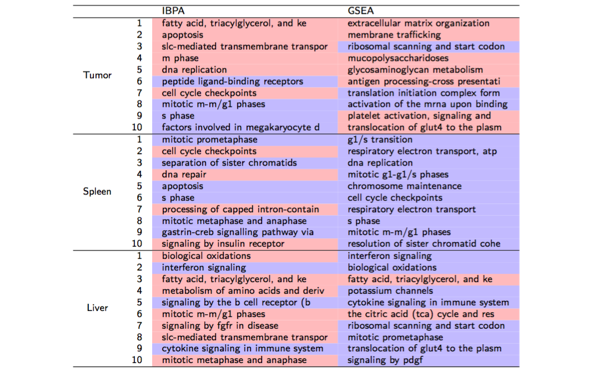
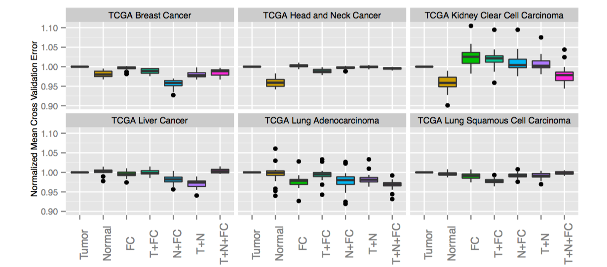
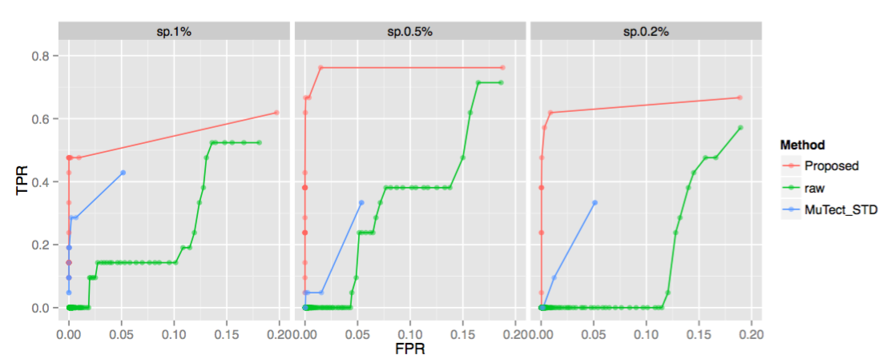

Research
My main research interest is to apply statistical and computational methods to analyze high dimensional biological data from cancer patients, the ultimate goal of which is to identify new predictive or prognostic biomarkers to facilitate the understanding of the underlying mechanisms of them.
- Pathway Analysis of Drug Effects on Gene Expression in Different Tissues for Genetically Engineered Mice Carrying Colon Cancer:

Figure1: Our proposed method IBPA identified more cancer related pathway level change in three relevant tissues compared with Gene Set Enrichment Analysis (GSEA).
- Survival Relevant Translational Signals in Tumor-adjacent-normal Tissues:

Figure 2: In different cancer cohorts in TCGA, adjacent normal tissues always provide complementary information towards survival prediction.
- Drug Effects on Somatic Mutation Profiles in Patients’ Circulating Tumor DNAs:

Figure 3: Our proposed somatic mutation calling method always gives the best ROC curve in terms of predicting the spiked-in mutation proportions (panel 1: 1%; panel 2: 0.5%; panel 3: 0.2%), simulating the real case of circulating tumor DNA samples from patients.